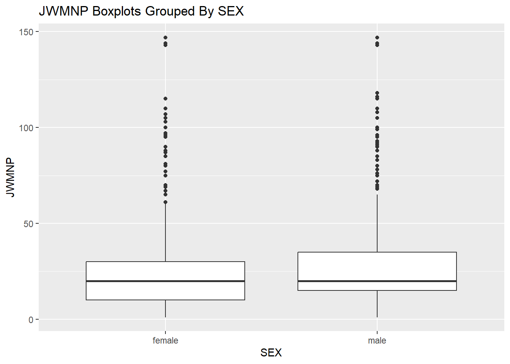

# Load in the tidyverse libraries
library(tidyverse)
library(lubridate)
library(hms)ST558 Project 1
By Ella Gruchacz and Kevin Kronk
Load Libraries
Introduction
In this project we will use our ability to create custom functions to call census APIs. Calling an API requires building the specific URL with all the variables and subsets you want in the correct format of a URL. Creating a custom function allows us to easily input which variables and subsets we want without having to worry about creating a URL in the correct format every time. Additionally, there are a few steps after creating the URL to properly parse the data and transform it into a usable data set. Creating a function allows us to streamline this process. Finally, we want to manipulate the data so we can glean insights so we can make custom functions to output the type of summaries we will always want to see with our census data. Overall, our goal is to write functions that will manipulate and process data sets that come from a census API.
Data
The data we are working with is American Community Survey 1-Year Estimates Public Use Microdata Sample or PUMS Census data. This is survey data is pseudo personal-level data that was collected from 2005-2019 and 2021-2023. This is publicly available data we can call at anytime. In this project we will not be working with all the variables collected from the survey. We will only call data from the years 2010 to 2022. The variables we will be calling in our functions are as follows:
- AGEP - Age
- GASP - Gas cost
- GRPIP - Gross rent
- JWAP - Time of arrival at work
- JWDP - Time of departure for work
- JWMNP - Travel time to work
- PWGTP - PUMS person weight (the number of observations (people) for a particular row)
- FER - Gave birth to child within the past 12 months
- HHL - Household language
- HISPEED - Broadband (high speed) Internet service such as cable, fiber optic, or DSL service
- JWTRNS - Means of transportation to work
- SCH - School enrollment
- SCHL - Educational attainment
- SEX - Sex
Finally, we can specify the geography level of this data to be either state, region, division, or all. For each of the levels we can specify a subgroup to narrow down the data by that level.
Data Processing
In this section we will be accomplishing our goal of data processing the census API by creating functions to query this API and return a nicely formatted tibble.
Helper Function
The first custom function we created is a helper function that works with a given URL and outputs a tibble. This is a simple helper function because it takes the URL directly, does not build it for you, and outputs the data in the columns as is.
# Helper function to take what is returned by GET() and turn it into a tibble
api_tibble <- function(my_url) {
GET_output <- httr::GET(my_url)
census_parsed <- jsonlite::fromJSON(rawToChar(GET_output$content)) #parse JSON content to character variables
colnames(census_parsed) <- census_parsed[1,] #finds column names and assigns them
census_parsed <- census_parsed[-1,] #remove first row (column names)
census_tibble <- as_tibble(census_parsed) #transform to tibble
class(census_tibble) <- c("census", class(census_tibble)) #make tibble a census class
return(census_tibble)
}APIurl <- "https://api.census.gov/data/2022/acs/acs1/pums?get=SEX,PWGTP,JWAP,MAR&SCHL=24&for=state:09&key=51fa8d7040e7bff1dae932352f6b998a4678a557"
api_tibble(APIurl)# A tibble: 600 × 6
SEX PWGTP JWAP MAR SCHL state
<chr> <chr> <chr> <chr> <chr> <chr>
1 1 16 0 5 24 09
2 2 42 102 1 24 09
3 1 44 0 1 24 09
4 1 44 112 5 24 09
5 2 37 83 1 24 09
6 1 33 112 5 24 09
7 2 62 0 1 24 09
8 2 97 112 5 24 09
9 1 261 106 1 24 09
10 1 76 89 1 24 09
# ℹ 590 more rowsSingle Year Function
In this section we created a function that pulls one year of PUMS census data. This function allows you to input the year, numeric variables, categorical variables, and geography level/subsets and will build the URL, call the API, and then transform all the variables into their appropriate type, numeric, factor, or time. Additionally, this function runs checks on your inputs to ensure you have only asked for data as outline above.
Dictionaries: Many of the variables in our data get pulled from the API as their “key” value rather than their true value. Below stores all of the variable’s key values and their associated true value. We will use these later on in our function to properly replace the values that get pulled into their true form which we will then be able to manipulate and calculate summaries on.
# There are redundant enties for these dictionaries
# For example, the API would on some years use "09" and others "9"
# Categorical Variables
FER_dict <- c("0" = "N/A (less than 15 years/greater than 50 years/ male)",
"1" = "Yes",
"2" = "No")
HHL_dict <- c("0" = "N/A (GQ/vacant)",
"1" = "English Only",
"2" = "Spanish",
"3" = "Other Indo-European languages",
"4" = "Asian and Pacific Island languages",
"5" = "Other Language")
HISPEED_dict <- c("0" = "N/A (GQ/vacant/no paid access to the internet)",
"1" = "Yes",
"2" = "No")
JWTRNS_dict <- c("0" = "N/A (not a worker-not in the labor force, including persons under 16 years; unemployed; employed, with a job but not at work; Armed Forces, with a job but not at work)",
"10" = "Walked",
"11" = "Worked from home",
"12" = "Other method",
"7" = "Taxicab",
"07" = "Taxicab",
"2" = "Bus",
"02" = "Bus",
"5" = "Light rail, streetcar, or trolley",
"05" = "Light rail, streetcar, or trolley",
"4" = "Long-distance train or commuter rail",
"04" = "Long-distance train or commuter rail",
"9" = "Bicycle",
"09" = "Bicycle",
"1" = "Car, truck, or van",
"01" = "Car, truck, or van",
"3" = "Subway or elevated rail",
"03" = "Subway or elevated rail",
"6" = "Ferryboat",
"06" = "Ferryboat",
"8" = "Motorcycle",
"08" = "Motorcycle")
SCH_dict <- c("0" = "N/A (less than 3 years old)",
"1" = "No, has not attended in the last 3 months",
"2" = "Yes, public school or public college",
"3" = "Yes, private school or college or home school")
SCHL_dict <- c("16" = "Regular high school diploma",
"1" = "No schooling completed",
"01" = "No schooling completed",
"4" = "Grade 1",
"04" = "Grade 1",
"3" = "Kindergarten",
"03" = "Kindergarten",
"7" = "Grade 4",
"07" = "Grade 4",
"23" = "Professional degree beyond a bachelor's degree",
"19" = "1 or more years of college credit, no degree",
"22" = "Master's degree",
"10" = "Grade 7",
"20" = "Associate's degree",
"0" = "N/A (less than 3 years old)",
"2" = "Nursery school, preschool",
"02" = "Nursery school, preschool",
"21" = "Bachelor's degree",
"8" = "Grade 5",
"08" = "Grade 5",
"24" = "Doctorate degree",
"6" = "Grade 3",
"06" = "Grade 3",
"14" = "Grade 11",
"17" = "GED or alternative credential",
"12" = "Grade 9",
"15" = "12th grade - no diploma",
"13" = "Grade 10",
"5" = "Grade 2",
"05" = "Grade 2",
"11" = "Grade 8",
"18" = "Some college, but less than 1 year",
"9" = "Grade 6",
"09" = "Grade 6")
SEX_dict <- c("1" = "male",
"2" = "female")
# Geo Level Variables
region_dict <- c("1" = "Northeast",
"9" = "Puerto Rico",
"3" = "South",
"2" = "Midwest",
"4" = "West")
division_dict <- c("7" = "West South Central (South Region)",
"2" = "Middle Atlantic (Northeast region)",
"4" = "West North Central (Midwest region)",
"6" = "East South Central (South region)",
"3" = "East North Central (Midwest region)",
"9" = "Pacific (West region)",
"0" = "Puerto Rico",
"5" = "South Atlantic (South region)",
"8" = "Mountain (West region)",
"1" = "New England (Northeast region)")
state_dict <- c("1" = "Alabama/AL",
"01" = "Alabama/AL",
"49" = "Utah/UT",
"21" = "Kentucky/KY",
"26" = "Michigan/MI",
"29" = "Missouri/MO",
"32" = "Nevada/NV",
"34" = "New Jersey/NJ",
"8" = "Colorado/CO",
"08" = "Colorado/CO",
"51" = "Virginia/VA",
"39" = "Ohio/OH",
"2" = "Alaska/AK",
"02" = "Alaska/AK",
"46" = "South Dakota/SD",
"4" = "Arizona/AZ",
"04" = "Arizona/AZ",
"6" = "California/CA",
"06" = "California/CA",
"55" = "Wisconsin/WI",
"15" = "Hawaii/HI",
"22" = "Louisiana/LA",
"30" = "Montana/MT",
"47" = "Tennessee/TN",
"48" = "Texas/TX",
"9" = "Connecticut/CT",
"09" = "Connecticut/CT",
"50" = "Vermont/VT",
"53" = "Washington/WA",
"17" = "Illinois/IL",
"20" = "Kansas/KS",
"72" = "Puerto Rico/PR",
"35" = "New Mexico/NM",
"36" = "New York/NY",
"10" = "Delaware/DE",
"11" = "District of Columbia/DC",
"12" = "Florida/FL",
"56" = "Wyoming/WY",
"16" = "Idaho/ID",
"25" = "Massachusetts/MA",
"27" = "Minnesota/MN",
"42" = "Pennsylvania/PA",
"45" = "South Carolina/SC",
"13" = "Georgia/GA",
"23" = "Maine/ME",
"24" = "Maryland/MD",
"28" = "Mississippi/MS",
"37" = "North Carolina/NC",
"41" = "Oregon/OR",
"5" = "Arkansas/AR",
"05" = "Arkansas/AR",
"19" = "Iowa/IA",
"31" = "Nebraska/NE",
"33" = "New Hampshire/NH",
"44" = "Rhode Island/RI",
"54" = "West Virginia/WV",
"18" = "Indiana/IN",
"38" = "North Dakota/ND",
"40" = "Oklahoma/OK")
# Time Variables
JWAP_dict <- c(
"258" = "9:40 p.m. to 9:44 p.m.",
"260" = "9:50 p.m. to 9:54 p.m.",
"261" = "9:55 p.m. to 9:59 p.m.",
"274" = "11:00 p.m. to 11:04 p.m.",
"48" = "4:10 a.m. to 4:14 a.m.",
"048" = "4:10 a.m. to 4:14 a.m.",
"58" = "5:00 a.m. to 5:04 a.m.",
"058" = "5:00 a.m. to 5:04 a.m.",
"76" = "6:30 a.m. to 6:34 a.m.",
"076" = "6:30 a.m. to 6:34 a.m.",
"91" = "7:45 a.m. to 7:49 a.m.",
"091" = "7:45 a.m. to 7:49 a.m.",
"94" = "8:00 a.m. to 8:04 a.m.",
"094" = "8:00 a.m. to 8:04 a.m.",
"122" = "10:20 a.m. to 10:24 a.m.",
"142" = "12:00 p.m. to 12:04 p.m.",
"146" = "12:20 p.m. to 12:24 p.m.",
"163" = "1:45 p.m. to 1:49 p.m.",
"165" = "1:55 p.m. to 1:59 p.m.",
"171" = "2:25 p.m. to 2:29 p.m.",
"184" = "3:30 p.m. to 3:34 p.m.",
"189" = "3:55 p.m. to 3:59 p.m.",
"192" = "4:10 p.m. to 4:14 p.m.",
"198" = "4:40 p.m. to 4:44 p.m.",
"210" = "5:40 p.m. to 5:44 p.m.",
"218" = "6:20 p.m. to 6:24 p.m.",
"220" = "6:30 p.m. to 6:34 p.m.",
"221" = "6:35 p.m. to 6:39 p.m.",
"222" = "6:40 p.m. to 6:44 p.m.",
"224" = "6:50 p.m. to 6:54 p.m.",
"227" = "7:05 p.m. to 7:09 p.m.",
"228" = "7:10 p.m. to 7:14 p.m.",
"251" = "9:05 p.m. to 9:09 p.m.",
"256" = "9:30 p.m. to 9:34 p.m.",
"259" = "9:45 p.m. to 9:49 p.m.",
"262" = "10:00 p.m. to 10:04 p.m.",
"270" = "10:40 p.m. to 10:44 p.m.",
"271" = "10:45 p.m. to 10:49 p.m.",
"276" = "11:10 p.m. to 11:14 p.m.",
"284" = "11:50 p.m. to 11:54 p.m.",
"6" = "12:25 a.m. to 12:29 a.m.",
"006" = "12:25 a.m. to 12:29 a.m.",
"8" = "12:40 a.m. to 12:44 a.m.",
"008" = "12:40 a.m. to 12:44 a.m.",
"9" = "12:45 a.m. to 12:49 a.m.",
"009" = "12:45 a.m. to 12:49 a.m.",
"11" = "1:00 a.m. to 1:04 a.m.",
"011" = "1:00 a.m. to 1:04 a.m.",
"17" = "1:30 a.m. to 1:34 a.m.",
"017" = "1:30 a.m. to 1:34 a.m.",
"20" = "1:45 a.m. to 1:49 a.m.",
"020" = "1:45 a.m. to 1:49 a.m.",
"31" = "2:45 a.m. to 2:49 a.m.",
"031" = "2:45 a.m. to 2:49 a.m.",
"39" = "3:25 a.m. to 3:29 a.m.",
"039" = "3:25 a.m. to 3:29 a.m.",
"53" = "4:35 a.m. to 4:39 a.m.",
"053" = "4:35 a.m. to 4:39 a.m.",
"65" = "5:35 a.m. to 5:39 a.m.",
"065" = "5:35 a.m. to 5:39 a.m.",
"75" = "6:25 a.m. to 6:29 a.m.",
"075" = "6:25 a.m. to 6:29 a.m.",
"85" = "7:15 a.m. to 7:19 a.m.",
"085" = "7:15 a.m. to 7:19 a.m.",
"90" = "7:40 a.m. to 7:44 a.m.",
"090" = "7:40 a.m. to 7:44 a.m.",
"101" = "8:35 a.m. to 8:39 a.m.",
"107" = "9:05 a.m. to 9:09 a.m.",
"121" = "10:15 a.m. to 10:19 a.m.",
"124" = "10:30 a.m. to 10:34 a.m.",
"137" = "11:35 a.m. to 11:39 a.m.",
"156" = "1:10 p.m. to 1:14 p.m.",
"164" = "1:50 p.m. to 1:54 p.m.",
"173" = "2:35 p.m. to 2:39 p.m.",
"197" = "4:35 p.m. to 4:39 p.m.",
"202" = "5:00 p.m. to 5:04 p.m.",
"234" = "7:40 p.m. to 7:44 p.m.",
"235" = "7:45 p.m. to 7:49 p.m.",
"246" = "8:40 p.m. to 8:44 p.m.",
"249" = "8:55 p.m. to 8:59 p.m.",
"257" = "9:35 p.m. to 9:39 p.m.",
"273" = "10:55 p.m. to 10:59 p.m.",
"277" = "11:15 p.m. to 11:19 p.m.",
"2" = "12:05 a.m. to 12:09 a.m.",
"002" = "12:05 a.m. to 12:09 a.m.",
"4" = "12:15 a.m. to 12:19 a.m.",
"004" = "12:15 a.m. to 12:19 a.m.",
"15" = "1:20 a.m. to 1:24 a.m.",
"015" = "1:20 a.m. to 1:24 a.m.",
"34" = "3:00 a.m. to 3:04 a.m.",
"034" = "3:00 a.m. to 3:04 a.m.",
"35" = "3:05 a.m. to 3:09 a.m.",
"035" = "3:05 a.m. to 3:09 a.m.",
"42" = "3:40 a.m. to 3:44 a.m.",
"042" = "3:40 a.m. to 3:44 a.m.",
"44" = "3:50 a.m. to 3:54 a.m.",
"044" = "3:50 a.m. to 3:54 a.m.",
"50" = "4:20 a.m. to 4:24 a.m.",
"050" = "4:20 a.m. to 4:24 a.m.",
"52" = "4:30 a.m. to 4:34 a.m.",
"052" = "4:30 a.m. to 4:34 a.m.",
"55" = "4:45 a.m. to 4:49 a.m.",
"055" = "4:45 a.m. to 4:49 a.m.",
"69" = "5:55 a.m. to 5:59 a.m.",
"069" = "5:55 a.m. to 5:59 a.m.",
"71" = "6:05 a.m. to 6:09 a.m.",
"071" = "6:05 a.m. to 6:09 a.m.",
"077" = "6:35 a.m. to 6:39 a.m.",
"079" = "6:45 a.m. to 6:49 a.m.",
"082" = "7:00 a.m. to 7:04 a.m.",
"089" = "7:35 a.m. to 7:39 a.m.",
"092" = "7:50 a.m. to 7:54 a.m.",
"093" = "7:55 a.m. to 7:59 a.m.",
"097" = "8:15 a.m. to 8:19 a.m.",
"77" = "6:35 a.m. to 6:39 a.m.",
"79" = "6:45 a.m. to 6:49 a.m.",
"82" = "7:00 a.m. to 7:04 a.m.",
"89" = "7:35 a.m. to 7:39 a.m.",
"92" = "7:50 a.m. to 7:54 a.m.",
"93" = "7:55 a.m. to 7:59 a.m.",
"97" = "8:15 a.m. to 8:19 a.m.",
"117" = "9:55 a.m. to 9:59 a.m.",
"118" = "10:00 a.m. to 10:04 a.m.",
"129" = "10:55 a.m. to 10:59 a.m.",
"132" = "11:10 a.m. to 11:14 a.m.",
"138" = "11:40 a.m. to 11:44 a.m.",
"144" = "12:10 p.m. to 12:14 p.m.",
"148" = "12:30 p.m. to 12:34 p.m.",
"150" = "12:40 p.m. to 12:44 p.m.",
"152" = "12:50 p.m. to 12:54 p.m.",
"166" = "2:00 p.m. to 2:04 p.m.",
"181" = "3:15 p.m. to 3:19 p.m.",
"183" = "3:25 p.m. to 3:29 p.m.",
"205" = "5:15 p.m. to 5:19 p.m.",
"219" = "6:25 p.m. to 6:29 p.m.",
"230" = "7:20 p.m. to 7:24 p.m.",
"233" = "7:35 p.m. to 7:39 p.m.",
"239" = "8:05 p.m. to 8:09 p.m.",
"244" = "8:30 p.m. to 8:34 p.m.",
"254" = "9:20 p.m. to 9:24 p.m.",
"265" = "10:15 p.m. to 10:19 p.m.",
"272" = "10:50 p.m. to 10:54 p.m.",
"013" = "1:10 a.m. to 1:14 a.m.",
"014" = "1:15 a.m. to 1:19 a.m.",
"019" = "1:40 a.m. to 1:44 a.m.",
"022" = "2:00 a.m. to 2:04 a.m.",
"033" = "2:55 a.m. to 2:59 a.m.",
"037" = "3:15 a.m. to 3:19 a.m.",
"041" = "3:35 a.m. to 3:39 a.m.",
"059" = "5:05 a.m. to 5:09 a.m.",
"067" = "5:45 a.m. to 5:49 a.m.",
"068" = "5:50 a.m. to 5:54 a.m.",
"074" = "6:20 a.m. to 6:24 a.m.",
"080" = "6:50 a.m. to 6:54 a.m.",
"084" = "7:10 a.m. to 7:14 a.m.",
"088" = "7:30 a.m. to 7:34 a.m.",
"095" = "8:05 a.m. to 8:09 a.m.",
"13" = "1:10 a.m. to 1:14 a.m.",
"14" = "1:15 a.m. to 1:19 a.m.",
"19" = "1:40 a.m. to 1:44 a.m.",
"22" = "2:00 a.m. to 2:04 a.m.",
"33" = "2:55 a.m. to 2:59 a.m.",
"37" = "3:15 a.m. to 3:19 a.m.",
"41" = "3:35 a.m. to 3:39 a.m.",
"59" = "5:05 a.m. to 5:09 a.m.",
"67" = "5:45 a.m. to 5:49 a.m.",
"68" = "5:50 a.m. to 5:54 a.m.",
"74" = "6:20 a.m. to 6:24 a.m.",
"80" = "6:50 a.m. to 6:54 a.m.",
"84" = "7:10 a.m. to 7:14 a.m.",
"88" = "7:30 a.m. to 7:34 a.m.",
"95" = "8:05 a.m. to 8:09 a.m.",
"100" = "8:30 a.m. to 8:34 a.m.",
"125" = "10:35 a.m. to 10:39 a.m.",
"140" = "11:50 a.m. to 11:54 a.m.",
"172" = "2:30 p.m. to 2:34 p.m.",
"178" = "3:00 p.m. to 3:04 p.m.",
"182" = "3:20 p.m. to 3:24 p.m.",
"185" = "3:35 p.m. to 3:39 p.m.",
"187" = "3:45 p.m. to 3:49 p.m.",
"199" = "4:45 p.m. to 4:49 p.m.",
"206" = "5:20 p.m. to 5:24 p.m.",
"208" = "5:30 p.m. to 5:34 p.m.",
"209" = "5:35 p.m. to 5:39 p.m.",
"243" = "8:25 p.m. to 8:29 p.m.",
"268" = "10:30 p.m. to 10:34 p.m.",
"269" = "10:35 p.m. to 10:39 p.m.",
"279" = "11:25 p.m. to 11:29 p.m.",
"001" = "12:00 a.m. to 12:04 a.m.",
"005" = "12:20 a.m. to 12:24 a.m.",
"007" = "12:30 a.m. to 12:39 a.m.",
"023" = "2:05 a.m. to 2:09 a.m.",
"025" = "2:15 a.m. to 2:19 a.m.",
"029" = "2:35 a.m. to 2:39 a.m.",
"036" = "3:10 a.m. to 3:14 a.m.",
"043" = "3:45 a.m. to 3:49 a.m.",
"046" = "4:00 a.m. to 4:04 a.m.",
"051" = "4:25 a.m. to 4:29 a.m.",
"056" = "4:50 a.m. to 4:54 a.m.",
"073" = "6:15 a.m. to 6:19 a.m.",
"081" = "6:55 a.m. to 6:59 a.m.",
"098" = "8:20 a.m. to 8:24 a.m.",
"1" = "12:00 a.m. to 12:04 a.m.",
"5" = "12:20 a.m. to 12:24 a.m.",
"7" = "12:30 a.m. to 12:39 a.m.",
"23" = "2:05 a.m. to 2:09 a.m.",
"25" = "2:15 a.m. to 2:19 a.m.",
"29" = "2:35 a.m. to 2:39 a.m.",
"36" = "3:10 a.m. to 3:14 a.m.",
"43" = "3:45 a.m. to 3:49 a.m.",
"46" = "4:00 a.m. to 4:04 a.m.",
"51" = "4:25 a.m. to 4:29 a.m.",
"56" = "4:50 a.m. to 4:54 a.m.",
"73" = "6:15 a.m. to 6:19 a.m.",
"81" = "6:55 a.m. to 6:59 a.m.",
"98" = "8:20 a.m. to 8:24 a.m.",
"103" = "8:45 a.m. to 8:49 a.m.",
"106" = "9:00 a.m. to 9:04 a.m.",
"114" = "9:40 a.m. to 9:44 a.m.",
"135" = "11:25 a.m. to 11:29 a.m.",
"143" = "12:05 p.m. to 12:09 p.m.",
"149" = "12:35 p.m. to 12:39 p.m.",
"157" = "1:15 p.m. to 1:19 p.m.",
"158" = "1:20 p.m. to 1:24 p.m.",
"160" = "1:30 p.m. to 1:34 p.m.",
"170" = "2:20 p.m. to 2:24 p.m.",
"174" = "2:40 p.m. to 2:44 p.m.",
"179" = "3:05 p.m. to 3:09 p.m.",
"194" = "4:20 p.m. to 4:24 p.m.",
"196" = "4:30 p.m. to 4:34 p.m.",
"211" = "5:45 p.m. to 5:49 p.m.",
"212" = "5:50 p.m. to 5:54 p.m.",
"214" = "6:00 p.m. to 6:04 p.m.",
"241" = "8:15 p.m. to 8:19 p.m.",
"264" = "10:10 p.m. to 10:14 p.m.",
"266" = "10:20 p.m. to 10:24 p.m.",
"016" = "1:25 a.m. to 1:29 a.m.",
"018" = "1:35 a.m. to 1:39 a.m.",
"021" = "1:50 a.m. to 1:59 a.m.",
"028" = "2:30 a.m. to 2:34 a.m.",
"054" = "4:40 a.m. to 4:44 a.m.",
"060" = "5:10 a.m. to 5:14 a.m.",
"064" = "5:30 a.m. to 5:34 a.m.",
"070" = "6:00 a.m. to 6:04 a.m.",
"078" = "6:40 a.m. to 6:44 a.m.",
"087" = "7:25 a.m. to 7:29 a.m.",
"16" = "1:25 a.m. to 1:29 a.m.",
"18" = "1:35 a.m. to 1:39 a.m.",
"21" = "1:50 a.m. to 1:59 a.m.",
"28" = "2:30 a.m. to 2:34 a.m.",
"54" = "4:40 a.m. to 4:44 a.m.",
"60" = "5:10 a.m. to 5:14 a.m.",
"64" = "5:30 a.m. to 5:34 a.m.",
"70" = "6:00 a.m. to 6:04 a.m.",
"78" = "6:40 a.m. to 6:44 a.m.",
"87" = "7:25 a.m. to 7:29 a.m.",
"105" = "8:55 a.m. to 8:59 a.m.",
"111" = "9:25 a.m. to 9:29 a.m.",
"119" = "10:05 a.m. to 10:09 a.m.",
"123" = "10:25 a.m. to 10:29 a.m.",
"126" = "10:40 a.m. to 10:44 a.m.",
"134" = "11:20 a.m. to 11:24 a.m.",
"139" = "11:45 a.m. to 11:49 a.m.",
"141" = "11:55 a.m. to 11:59 a.m.",
"151" = "12:45 p.m. to 12:49 p.m.",
"153" = "12:55 p.m. to 12:59 p.m.",
"169" = "2:15 p.m. to 2:19 p.m.",
"180" = "3:10 p.m. to 3:14 p.m.",
"203" = "5:05 p.m. to 5:09 p.m.",
"204" = "5:10 p.m. to 5:14 p.m.",
"207" = "5:25 p.m. to 5:29 p.m.",
"215" = "6:05 p.m. to 6:09 p.m.",
"216" = "6:10 p.m. to 6:14 p.m.",
"217" = "6:15 p.m. to 6:19 p.m.",
"223" = "6:45 p.m. to 6:49 p.m.",
"225" = "6:55 p.m. to 6:59 p.m.",
"247" = "8:45 p.m. to 8:49 p.m.",
"248" = "8:50 p.m. to 8:54 p.m.",
"252" = "9:10 p.m. to 9:14 p.m.",
"253" = "9:15 p.m. to 9:19 p.m.",
"255" = "9:25 p.m. to 9:29 p.m.",
"263" = "10:05 p.m. to 10:09 p.m.",
"267" = "10:25 p.m. to 10:29 p.m.",
"278" = "11:20 p.m. to 11:24 p.m.",
"280" = "11:30 p.m. to 11:34 p.m.",
"281" = "11:35 p.m. to 11:39 p.m.",
"282" = "11:40 p.m. to 11:44 p.m.",
"0" = NA,
"003" = "12:10 a.m. to 12:14 a.m.",
"010" = "12:50 a.m. to 12:59 a.m.",
"038" = "3:20 a.m. to 3:24 a.m.",
"049" = "4:15 a.m. to 4:19 a.m.",
"057" = "4:55 a.m. to 4:59 a.m.",
"061" = "5:15 a.m. to 5:19 a.m.",
"062" = "5:20 a.m. to 5:24 a.m.",
"072" = "6:10 a.m. to 6:14 a.m.",
"083" = "7:05 a.m. to 7:09 a.m.",
"3" = "12:10 a.m. to 12:14 a.m.",
"10" = "12:50 a.m. to 12:59 a.m.",
"38" = "3:20 a.m. to 3:24 a.m.",
"49" = "4:15 a.m. to 4:19 a.m.",
"57" = "4:55 a.m. to 4:59 a.m.",
"61" = "5:15 a.m. to 5:19 a.m.",
"62" = "5:20 a.m. to 5:24 a.m.",
"72" = "6:10 a.m. to 6:14 a.m.",
"83" = "7:05 a.m. to 7:09 a.m.",
"104" = "8:50 a.m. to 8:54 a.m.",
"108" = "9:10 a.m. to 9:14 a.m.",
"116" = "9:50 a.m. to 9:54 a.m.",
"128" = "10:50 a.m. to 10:54 a.m.",
"133" = "11:15 a.m. to 11:19 a.m.",
"136" = "11:30 a.m. to 11:34 a.m.",
"147" = "12:25 p.m. to 12:29 p.m.",
"154" = "1:00 p.m. to 1:04 p.m.",
"155" = "1:05 p.m. to 1:09 p.m.",
"161" = "1:35 p.m. to 1:39 p.m.",
"162" = "1:40 p.m. to 1:44 p.m.",
"167" = "2:05 p.m. to 2:09 p.m.",
"175" = "2:45 p.m. to 2:49 p.m.",
"177" = "2:55 p.m. to 2:59 p.m.",
"186" = "3:40 p.m. to 3:44 p.m.",
"190" = "4:00 p.m. to 4:04 p.m.",
"191" = "4:05 p.m. to 4:09 p.m.",
"193" = "4:15 p.m. to 4:19 p.m.",
"200" = "4:50 p.m. to 4:54 p.m.",
"201" = "4:55 p.m. to 4:59 p.m.",
"226" = "7:00 p.m. to 7:04 p.m.",
"232" = "7:30 p.m. to 7:34 p.m.",
"236" = "7:50 p.m. to 7:54 p.m.",
"237" = "7:55 p.m. to 7:59 p.m.",
"238" = "8:00 p.m. to 8:04 p.m.",
"240" = "8:10 p.m. to 8:14 p.m.",
"242" = "8:20 p.m. to 8:24 p.m.",
"245" = "8:35 p.m. to 8:39 p.m.",
"250" = "9:00 p.m. to 9:04 p.m.",
"275" = "11:05 p.m. to 11:09 p.m.",
"283" = "11:45 p.m. to 11:49 p.m.",
"285" = "11:55 p.m. to 11:59 p.m.",
"012" = "1:05 a.m. to 1:09 a.m.",
"024" = "2:10 a.m. to 2:14 a.m.",
"026" = "2:20 a.m. to 2:24 a.m.",
"027" = "2:25 a.m. to 2:29 a.m.",
"030" = "2:40 a.m. to 2:44 a.m.",
"032" = "2:50 a.m. to 2:54 a.m.",
"040" = "3:30 a.m. to 3:34 a.m.",
"045" = "3:55 a.m. to 3:59 a.m.",
"047" = "4:05 a.m. to 4:09 a.m.",
"063" = "5:25 a.m. to 5:29 a.m.",
"066" = "5:40 a.m. to 5:44 a.m.",
"086" = "7:20 a.m. to 7:24 a.m.",
"096" = "8:10 a.m. to 8:14 a.m.",
"099" = "8:25 a.m. to 8:29 a.m.",
"12" = "1:05 a.m. to 1:09 a.m.",
"24" = "2:10 a.m. to 2:14 a.m.",
"26" = "2:20 a.m. to 2:24 a.m.",
"27" = "2:25 a.m. to 2:29 a.m.",
"30" = "2:40 a.m. to 2:44 a.m.",
"32" = "2:50 a.m. to 2:54 a.m.",
"40" = "3:30 a.m. to 3:34 a.m.",
"45" = "3:55 a.m. to 3:59 a.m.",
"47" = "4:05 a.m. to 4:09 a.m.",
"63" = "5:25 a.m. to 5:29 a.m.",
"66" = "5:40 a.m. to 5:44 a.m.",
"86" = "7:20 a.m. to 7:24 a.m.",
"96" = "8:10 a.m. to 8:14 a.m.",
"99" = "8:25 a.m. to 8:29 a.m.",
"102" = "8:40 a.m. to 8:44 a.m.",
"109" = "9:15 a.m. to 9:19 a.m.",
"110" = "9:20 a.m. to 9:24 a.m.",
"112" = "9:30 a.m. to 9:34 a.m.",
"113" = "9:35 a.m. to 9:39 a.m.",
"115" = "9:45 a.m. to 9:49 a.m.",
"120" = "10:10 a.m. to 10:14 a.m.",
"127" = "10:45 a.m. to 10:49 a.m.",
"130" = "11:00 a.m. to 11:04 a.m.",
"131" = "11:05 a.m. to 11:09 a.m.",
"145" = "12:15 p.m. to 12:19 p.m.",
"159" = "1:25 p.m. to 1:29 p.m.",
"168" = "2:10 p.m. to 2:14 p.m.",
"176" = "2:50 p.m. to 2:54 p.m.",
"188" = "3:50 p.m. to 3:54 p.m.",
"195" = "4:25 p.m. to 4:29 p.m.",
"213" = "5:55 p.m. to 5:59 p.m.",
"229" = "7:15 p.m. to 7:19 p.m.",
"231" = "7:25 p.m. to 7:29 p.m."
)
JWDP_dict <- c(
"014" = "4:10 a.m. to 4:19 a.m.",
"015" = "4:20 a.m. to 4:29 a.m.",
"017" = "4:40 a.m. to 4:49 a.m.",
"022" = "5:15 a.m. to 5:19 a.m.",
"035" = "6:20 a.m. to 6:24 a.m.",
"046" = "7:15 a.m. to 7:19 a.m.",
"065" = "8:50 a.m. to 8:54 a.m.",
"068" = "9:05 a.m. to 9:09 a.m.",
"076" = "9:45 a.m. to 9:49 a.m.",
"079" = "10:00 a.m. to 10:09 a.m.",
"083" = "10:40 a.m. to 10:49 a.m.",
"085" = "11:00 a.m. to 11:09 a.m.",
"086" = "11:10 a.m. to 11:19 a.m.",
"14" = "4:10 a.m. to 4:19 a.m.",
"15" = "4:20 a.m. to 4:29 a.m.",
"17" = "4:40 a.m. to 4:49 a.m.",
"22" = "5:15 a.m. to 5:19 a.m.",
"35" = "6:20 a.m. to 6:24 a.m.",
"46" = "7:15 a.m. to 7:19 a.m.",
"65" = "8:50 a.m. to 8:54 a.m.",
"68" = "9:05 a.m. to 9:09 a.m.",
"76" = "9:45 a.m. to 9:49 a.m.",
"79" = "10:00 a.m. to 10:09 a.m.",
"83" = "10:40 a.m. to 10:49 a.m.",
"85" = "11:00 a.m. to 11:09 a.m.",
"86" = "11:10 a.m. to 11:19 a.m.",
"103" = "2:00 p.m. to 2:09 p.m.",
"105" = "2:20 p.m. to 2:29 p.m.",
"118" = "4:30 p.m. to 4:39 p.m.",
"127" = "6:00 p.m. to 6:09 p.m.",
"130" = "6:30 p.m. to 6:39 p.m.",
"131" = "6:40 p.m. to 6:49 p.m.",
"139" = "9:20 p.m. to 9:29 p.m.",
"141" = "9:40 p.m. to 9:49 p.m.",
"149" = "11:00 p.m. to 11:29 p.m.",
"057" = "8:10 a.m. to 8:14 a.m.",
"059" = "8:20 a.m. to 8:24 a.m.",
"063" = "8:40 a.m. to 8:44 a.m.",
"066" = "8:55 a.m. to 8:59 a.m.",
"073" = "9:30 a.m. to 9:34 a.m.",
"078" = "9:55 a.m. to 9:59 a.m.",
"57" = "8:10 a.m. to 8:14 a.m.",
"59" = "8:20 a.m. to 8:24 a.m.",
"63" = "8:40 a.m. to 8:44 a.m.",
"66" = "8:55 a.m. to 8:59 a.m.",
"73" = "9:30 a.m. to 9:34 a.m.",
"78" = "9:55 a.m. to 9:59 a.m.",
"100" = "1:30 p.m. to 1:39 p.m.",
"101" = "1:40 p.m. to 1:49 p.m.",
"104" = "2:10 p.m. to 2:19 p.m.",
"107" = "2:40 p.m. to 2:49 p.m.",
"111" = "3:20 p.m. to 3:29 p.m.",
"116" = "4:10 p.m. to 4:19 p.m.",
"128" = "6:10 p.m. to 6:19 p.m.",
"150" = "11:30 p.m. to 11:59 p.m.",
"0" = NA,
"010" = "3:30 a.m. to 3:39 a.m.",
"011" = "3:40 a.m. to 3:49 a.m.",
"019" = "5:00 a.m. to 5:04 a.m.",
"028" = "5:45 a.m. to 5:49 a.m.",
"044" = "7:05 a.m. to 7:09 a.m.",
"045" = "7:10 a.m. to 7:14 a.m.",
"047" = "7:20 a.m. to 7:24 a.m.",
"049" = "7:30 a.m. to 7:34 a.m.",
"053" = "7:50 a.m. to 7:54 a.m.",
"055" = "8:00 a.m. to 8:04 a.m.",
"056" = "8:05 a.m. to 8:09 a.m.",
"084" = "10:50 a.m. to 10:59 a.m.",
"090" = "11:50 a.m. to 11:59 a.m.",
"092" = "12:10 p.m. to 12:19 p.m.",
"10" = "3:30 a.m. to 3:39 a.m.",
"11" = "3:40 a.m. to 3:49 a.m.",
"19" = "5:00 a.m. to 5:04 a.m.",
"28" = "5:45 a.m. to 5:49 a.m.",
"44" = "7:05 a.m. to 7:09 a.m.",
"45" = "7:10 a.m. to 7:14 a.m.",
"47" = "7:20 a.m. to 7:24 a.m.",
"49" = "7:30 a.m. to 7:34 a.m.",
"53" = "7:50 a.m. to 7:54 a.m.",
"55" = "8:00 a.m. to 8:04 a.m.",
"56" = "8:05 a.m. to 8:09 a.m.",
"84" = "10:50 a.m. to 10:59 a.m.",
"90" = "11:50 a.m. to 11:59 a.m.",
"92" = "12:10 p.m. to 12:19 p.m.",
"110" = "3:10 p.m. to 3:19 p.m.",
"112" = "3:30 p.m. to 3:39 p.m.",
"120" = "4:50 p.m. to 4:59 p.m.",
"132" = "6:50 p.m. to 6:59 p.m.",
"133" = "7:00 p.m. to 7:29 p.m.",
"134" = "7:30 p.m. to 7:59 p.m.",
"009" = "3:20 a.m. to 3:29 a.m.",
"023" = "5:20 a.m. to 5:24 a.m.",
"031" = "6:00 a.m. to 6:04 a.m.",
"038" = "6:35 a.m. to 6:39 a.m.",
"040" = "6:45 a.m. to 6:49 a.m.",
"050" = "7:35 a.m. to 7:39 a.m.",
"060" = "8:25 a.m. to 8:29 a.m.",
"062" = "8:35 a.m. to 8:39 a.m.",
"064" = "8:45 a.m. to 8:49 a.m.",
"067" = "9:00 a.m. to 9:04 a.m.",
"069" = "9:10 a.m. to 9:14 a.m.",
"082" = "10:30 a.m. to 10:39 a.m.",
"095" = "12:40 p.m. to 12:49 p.m.",
"096" = "12:50 p.m. to 12:59 p.m.",
"097" = "1:00 p.m. to 1:09 p.m.",
"9" = "3:20 a.m. to 3:29 a.m.",
"23" = "5:20 a.m. to 5:24 a.m.",
"31" = "6:00 a.m. to 6:04 a.m.",
"38" = "6:35 a.m. to 6:39 a.m.",
"40" = "6:45 a.m. to 6:49 a.m.",
"50" = "7:35 a.m. to 7:39 a.m.",
"60" = "8:25 a.m. to 8:29 a.m.",
"62" = "8:35 a.m. to 8:39 a.m.",
"64" = "8:45 a.m. to 8:49 a.m.",
"67" = "9:00 a.m. to 9:04 a.m.",
"69" = "9:10 a.m. to 9:14 a.m.",
"82" = "10:30 a.m. to 10:39 a.m.",
"95" = "12:40 p.m. to 12:49 p.m.",
"96" = "12:50 p.m. to 12:59 p.m.",
"97" = "1:00 p.m. to 1:09 p.m.",
"119" = "4:40 p.m. to 4:49 p.m.",
"121" = "5:00 p.m. to 5:09 p.m.",
"135" = "8:00 p.m. to 8:29 p.m.",
"003" = "1:00 a.m. to 1:29 a.m.",
"033" = "6:10 a.m. to 6:14 a.m.",
"036" = "6:25 a.m. to 6:29 a.m.",
"041" = "6:50 a.m. to 6:54 a.m.",
"061" = "8:30 a.m. to 8:34 a.m.",
"081" = "10:20 a.m. to 10:29 a.m.",
"093" = "12:20 p.m. to 12:29 p.m.",
"098" = "1:10 p.m. to 1:19 p.m.",
"3" = "1:00 a.m. to 1:29 a.m.",
"33" = "6:10 a.m. to 6:14 a.m.",
"36" = "6:25 a.m. to 6:29 a.m.",
"41" = "6:50 a.m. to 6:54 a.m.",
"61" = "8:30 a.m. to 8:34 a.m.",
"81" = "10:20 a.m. to 10:29 a.m.",
"93" = "12:20 p.m. to 12:29 p.m.",
"98" = "1:10 p.m. to 1:19 p.m.",
"102" = "1:50 p.m. to 1:59 p.m.",
"109" = "3:00 p.m. to 3:09 p.m.",
"115" = "4:00 p.m. to 4:09 p.m.",
"126" = "5:50 p.m. to 5:59 p.m.",
"143" = "10:00 p.m. to 10:09 p.m.",
"145" = "10:20 p.m. to 10:29 p.m.",
"001" = "12:00 a.m. to 12:29 a.m.",
"006" = "2:30 a.m. to 2:59 a.m.",
"012" = "3:50 a.m. to 3:59 a.m.",
"013" = "4:00 a.m. to 4:09 a.m.",
"016" = "4:30 a.m. to 4:39 a.m.",
"025" = "5:30 a.m. to 5:34 a.m.",
"026" = "5:35 a.m. to 5:39 a.m.",
"030" = "5:55 a.m. to 5:59 a.m.",
"077" = "9:50 a.m. to 9:54 a.m.",
"087" = "11:20 a.m. to 11:29 a.m.",
"088" = "11:30 a.m. to 11:39 a.m.",
"094" = "12:30 p.m. to 12:39 p.m.",
"1" = "12:00 a.m. to 12:29 a.m.",
"6" = "2:30 a.m. to 2:59 a.m.",
"12" = "3:50 a.m. to 3:59 a.m.",
"13" = "4:00 a.m. to 4:09 a.m.",
"16" = "4:30 a.m. to 4:39 a.m.",
"25" = "5:30 a.m. to 5:34 a.m.",
"26" = "5:35 a.m. to 5:39 a.m.",
"30" = "5:55 a.m. to 5:59 a.m.",
"77" = "9:50 a.m. to 9:54 a.m.",
"87" = "11:20 a.m. to 11:29 a.m.",
"88" = "11:30 a.m. to 11:39 a.m.",
"94" = "12:30 p.m. to 12:39 p.m.",
"106" = "2:30 p.m. to 2:39 p.m.",
"108" = "2:50 p.m. to 2:59 p.m.",
"122" = "5:10 p.m. to 5:19 p.m.",
"123" = "5:20 p.m. to 5:29 p.m.",
"124" = "5:30 p.m. to 5:39 p.m.",
"144" = "10:10 p.m. to 10:19 p.m.",
"002" = "12:30 a.m. to 12:59 a.m.",
"004" = "1:30 a.m. to 1:59 a.m.",
"005" = "2:00 a.m. to 2:29 a.m.",
"007" = "3:00 a.m. to 3:09 a.m.",
"020" = "5:05 a.m. to 5:09 a.m.",
"021" = "5:10 a.m. to 5:14 a.m.",
"024" = "5:25 a.m. to 5:29 a.m.",
"027" = "5:40 a.m. to 5:44 a.m.",
"034" = "6:15 a.m. to 6:19 a.m.",
"039" = "6:40 a.m. to 6:44 a.m.",
"042" = "6:55 a.m. to 6:59 a.m.",
"043" = "7:00 a.m. to 7:04 a.m.",
"048" = "7:25 a.m. to 7:29 a.m.",
"051" = "7:40 a.m. to 7:44 a.m.",
"058" = "8:15 a.m. to 8:19 a.m.",
"072" = "9:25 a.m. to 9:29 a.m.",
"074" = "9:35 a.m. to 9:39 a.m.",
"075" = "9:40 a.m. to 9:44 a.m.",
"091" = "12:00 p.m. to 12:09 p.m.",
"2" = "12:30 a.m. to 12:59 a.m.",
"4" = "1:30 a.m. to 1:59 a.m.",
"5" = "2:00 a.m. to 2:29 a.m.",
"7" = "3:00 a.m. to 3:09 a.m.",
"20" = "5:05 a.m. to 5:09 a.m.",
"21" = "5:10 a.m. to 5:14 a.m.",
"24" = "5:25 a.m. to 5:29 a.m.",
"27" = "5:40 a.m. to 5:44 a.m.",
"34" = "6:15 a.m. to 6:19 a.m.",
"39" = "6:40 a.m. to 6:44 a.m.",
"42" = "6:55 a.m. to 6:59 a.m.",
"43" = "7:00 a.m. to 7:04 a.m.",
"48" = "7:25 a.m. to 7:29 a.m.",
"51" = "7:40 a.m. to 7:44 a.m.",
"58" = "8:15 a.m. to 8:19 a.m.",
"72" = "9:25 a.m. to 9:29 a.m.",
"74" = "9:35 a.m. to 9:39 a.m.",
"75" = "9:40 a.m. to 9:44 a.m.",
"91" = "12:00 p.m. to 12:09 p.m.",
"113" = "3:40 p.m. to 3:49 p.m.",
"117" = "4:20 p.m. to 4:29 p.m.",
"125" = "5:40 p.m. to 5:49 p.m.",
"129" = "6:20 p.m. to 6:29 p.m.",
"136" = "8:30 p.m. to 8:59 p.m.",
"137" = "9:00 p.m. to 9:09 p.m.",
"140" = "9:30 p.m. to 9:39 p.m.",
"008" = "3:10 a.m. to 3:19 a.m.",
"018" = "4:50 a.m. to 4:59 a.m.",
"029" = "5:50 a.m. to 5:54 a.m.",
"032" = "6:05 a.m. to 6:09 a.m.",
"037" = "6:30 a.m. to 6:34 a.m.",
"052" = "7:45 a.m. to 7:49 a.m.",
"054" = "7:55 a.m. to 7:59 a.m.",
"070" = "9:15 a.m. to 9:19 a.m.",
"071" = "9:20 a.m. to 9:24 a.m.",
"080" = "10:10 a.m. to 10:19 a.m.",
"089" = "11:40 a.m. to 11:49 a.m.",
"099" = "1:20 p.m. to 1:29 p.m.",
"8" = "3:10 a.m. to 3:19 a.m.",
"18" = "4:50 a.m. to 4:59 a.m.",
"29" = "5:50 a.m. to 5:54 a.m.",
"32" = "6:05 a.m. to 6:09 a.m.",
"37" = "6:30 a.m. to 6:34 a.m.",
"52" = "7:45 a.m. to 7:49 a.m.",
"54" = "7:55 a.m. to 7:59 a.m.",
"70" = "9:15 a.m. to 9:19 a.m.",
"71" = "9:20 a.m. to 9:24 a.m.",
"80" = "10:10 a.m. to 10:19 a.m.",
"89" = "11:40 a.m. to 11:49 a.m.",
"99" = "1:20 p.m. to 1:29 p.m.",
"114" = "3:50 p.m. to 3:59 p.m.",
"138" = "9:10 p.m. to 9:19 p.m.",
"142" = "9:50 p.m. to 9:59 p.m.",
"146" = "10:30 p.m. to 10:39 p.m.",
"147" = "10:40 p.m. to 10:49 p.m.",
"148" = "10:50 p.m. to 10:59 p.m."
)Here we create the actual function. The main components of the function are as follows 1. Checks the user input and stops the function if invalid 2. Takes user inputs and builds a URL 3. Used the helper function to call the API and return a tibble 4. Convert variables to true values (if needed) and convert to appropriate types including factors, numeric, and time.
Other notes about the function:
Default inputs are year = 2022, numeric variables are PWGTP and AGEP, categorical variable is SEX, geography level is state at subset 09 (Connecticut).
PWGTP must be called and there must be more than one numeric varaible.
At least one categorical variable must be called.
# specify the number of variables to be returned
call_API <- function(year=2022, num_vars = c("PWGTP", "AGEP"), cat_vars = c("SEX"), geo_level = "state", geo_subset = "09") {
if (!is.numeric(year) | year < 2010 | year > 2022 | year == 2020) {
stop("Year input invalid!") #checks input of year is numeric and between 2010 and 2022 and is not 2020.
} else if (!is.element("PWGTP", num_vars)) {
stop("Numeric variables does not contain PWGTP") #check PWGTP is called
} else if (length(num_vars) < 2) {
stop("Must enter more than one numeric variable") #check more than 1 numeric variable
} else if (!all(num_vars %in% c("PWGTP", "AGEP", "GASP", "GRPIP", "JWAP",
"JWDP", "JWMNP"))) {
stop("Entered an invalid numeric variable") #checks a valid numeric variable is called
} else if (!all(cat_vars %in% c("FER", "HHL", "HISPEED", "JWTRNS", "SCH",
"SCHL", "SEX"))) {
stop("Entered an invalid categorical variable") #checks a valid categorical is called
} else if (length(cat_vars) < 1) {
stop("Must enter at least one categorical variable")
} else if (("HISPEED" %in% cat_vars | "JWTRNS" %in% cat_vars) &
!(year %in% c(2019, 2021))) {
stop("HISPEED and JWTRNS only have data for 2019 and 2021") #checks HISPEED and JWTRNS are not called when year is 2019 or 2021
} else if (!all(geo_level %in% c("state", "division", "region", "all"))) {
stop("Entered an invalid geography level") #checks a valid geography level is entered
} else if ((geo_level == "state" & !(geo_subset %in% names(state_dict))) |
(geo_level == "division" & !(geo_subset %in% names(division_dict))) |
(geo_level == "region" & !(geo_subset %in% names(region_dict)))) {
stop("Entered an invalid geography subset") #uses geo_subset dictionary to check a valid subset value was inputted
} else {
geo_paste <- ifelse(geo_level == "all", "",
paste0("&for=",geo_level,":",
geo_subset)) #parses geo level information if inputted
my_url <- paste0("https://api.census.gov/data/",
year,
"/acs/acs1/pums?get=",
paste(cat_vars,collapse =","),
",",
paste(num_vars,collapse =","),
geo_paste,
"&key=51fa8d7040e7bff1dae932352f6b998a4678a557") #buils URL with user inputs
}
# Use the helper function to query the API with the URL, then make a tibble
API_data <- api_tibble(my_url)
# Using dictionaries to convert the values in the character variables
# Then converting those character type columns to factors
for (var in c(cat_vars, geo_level)) {
if (var == 'all') {
next
}
API_data <- API_data |>
# the !! := part allows you to use a "string" for a new variable name
# get() takes a string and gets the corresponding dictionary or column
mutate(!!var := as.factor(get(paste0(var, "_dict"))[get(var)]))
}
#Using dictionaries to convert values to string that is a range of time
#Splits string and transforms into a time type format
#Finds the middle of the two times and saves it
for (var in num_vars[(num_vars == "JWAP") |
(num_vars == "JWDP")]) {
API_data <- API_data |>
mutate(!!var := get(paste0(var, "_dict"))[get(var)]) |>
mutate(
time_1 = as_hms(strptime(
stringr::str_split_i(
toupper(gsub('[.]','', get(var))),
" TO ", 1),
format = "%I:%M %p")),
time_2 = as_hms(strptime(
stringr::str_split_i(
toupper(gsub('[.]','', get(var))),
" TO ", 2),
format = "%I:%M %p")),
!!var := as_hms(time_1 + (time_2 - time_1)/2)
) |>
select(-starts_with("time")) #removes variables made that are ends of the time interval
}
# Go through the rest of the numerical variables and replace values
for (var in num_vars[(num_vars != "PWGTP") &
(num_vars != "JWAP") &
(num_vars != "JWDP")]) {
if (var == "AGEP") {
API_data <- API_data |>
mutate(!!var := ifelse(get(var) %in% c("0", "00"), NA, get(var)))
} else if (var == "GASP") {
API_data <- API_data |>
mutate(!!var := ifelse(get(var) %in% c("0", "1", "2", "3",
"001", "002", "003"),
NA, get(var)))
} else if (var == "GRPIP") {
API_data <- API_data |>
mutate(!!var := ifelse(get(var) == "0", NA,
ifelse(get(var) == "101", NA, get(var))))
} else if (var == "JWMNP") {
API_data <- API_data |>
mutate(!!var := ifelse(get(var) == "0", NA, get(var)))
}
}
# Converts the remaining columns to numeric
API_data <- API_data |>
# Across all columns that are character type, convert them to numeric
mutate(across(where(is.character), as.numeric))
return(API_data)
}Let’s test calling the API using out new function!
As you can see this takes the information we want very nicely and outputs all the variables in a usable format. This saves us time as their are many combinations of variables we could ask for and we don’t need to uniquely parsing and converting our data.
test_tib <- call_API(2021,
c("PWGTP", "AGEP", "GASP", "GRPIP", "JWAP", "JWDP", "JWMNP"),
c("FER", "HHL", "SCH", "SCHL", "SEX"),
"state",
"09")
test_tib# A tibble: 36,665 × 13
FER HHL SCH SCHL SEX PWGTP AGEP GASP GRPIP JWAP JWDP JWMNP state
<fct> <fct> <fct> <fct> <fct> <dbl> <dbl> <dbl> <dbl> <tim> <tim> <dbl> <fct>
1 N/A … N/A … Yes,… Grad… male 6 13 NA NA NA NA NA Conn…
2 No N/A … Yes,… 1 or… fema… 84 20 NA NA 10:02 09:32 30 Conn…
3 N/A … N/A … No, … Bach… male 14 89 NA NA NA NA NA Conn…
4 N/A … N/A … Yes,… 1 or… male 9 22 NA NA NA NA NA Conn…
5 N/A … N/A … No, … Some… male 80 48 NA NA NA NA NA Conn…
6 N/A … N/A … No, … No s… male 3 46 NA NA NA NA NA Conn…
7 N/A … N/A … No, … Bach… male 20 56 NA NA NA NA NA Conn…
8 No N/A … Yes,… 1 or… fema… 46 19 NA NA NA NA NA Conn…
9 No N/A … Yes,… Regu… fema… 35 18 NA NA NA NA NA Conn…
10 N/A … N/A … No, … Regu… male 138 45 NA NA NA NA NA Conn…
# ℹ 36,655 more rowsMultiple Year Function
In this section we creates a function that allows the user to specify multiple years of data (using the same constraints of what can be called as above). For every year inputted, the function calls the single year function and combines the tibbles into one data set.
call_API_mult_years <- function(years=c(2022), num_vars = c("PWGTP", "AGEP"), char_var = c("SEX"), geo_level = "state", geo_subset = "09") {
first <- TRUE
for (year in years) {
if (first) {
multi_year_tibble <- call_API(year, num_vars, char_var,
geo_level, geo_subset)
multi_year_tibble['Year'] <- year #saves in a new column which year is pulled
first <- FALSE
} else {
single_year_tibble <- call_API(year, num_vars, char_var,
geo_level, geo_subset) #use single year function to call API
single_year_tibble['Year'] <- year
multi_year_tibble <- dplyr::bind_rows(multi_year_tibble,
single_year_tibble) #combine tibbles
}
}
return(multi_year_tibble)
}Let’s test it!
test_tibble <- call_API_mult_years(c(2019, 2021, 2022),
c("PWGTP", "AGEP","GASP", "GRPIP", "JWAP",
"JWDP", "JWMNP"),
c("SEX","FER", "HHL",
"SCH", "SCHL"),
"state",
"09")
test_tibble# A tibble: 109,612 × 14
SEX FER HHL SCH SCHL PWGTP AGEP GASP GRPIP JWAP JWDP JWMNP state
<fct> <fct> <fct> <fct> <fct> <dbl> <dbl> <dbl> <dbl> <tim> <tim> <dbl> <fct>
1 fema… N/A … N/A … No, … Some… 11 87 NA NA NA NA NA Conn…
2 fema… No N/A … Yes,… 1 or… 79 21 NA NA NA NA NA Conn…
3 male N/A … N/A … Yes,… 1 or… 107 20 NA NA NA NA NA Conn…
4 male N/A … N/A … Yes,… 1 or… 65 21 NA NA NA NA NA Conn…
5 male N/A … N/A … No, … 1 or… 27 84 NA NA NA NA NA Conn…
6 fema… No N/A … Yes,… 1 or… 104 21 NA NA NA NA NA Conn…
7 male N/A … N/A … No, … Regu… 77 53 NA NA NA NA NA Conn…
8 male N/A … N/A … Yes,… Grad… 18 19 NA NA NA NA NA Conn…
9 fema… No N/A … Yes,… 1 or… 59 18 NA NA NA NA NA Conn…
10 fema… No N/A … Yes,… 1 or… 85 20 NA NA NA NA NA Conn…
# ℹ 109,602 more rows
# ℹ 1 more variable: Year <dbl>Summary Function
We can write our own custom summary function with the tibble that has a class of “census”.
# Write function that produces means and std devs for numeric variables
# and counts for categorical variables.
summary.census <- function(data,
num_var_vec = c("all"),
cat_var_vec = c("all")) {
summary_list <- list()
# By default, summarize all numeric variables (other than PWGTP)
# and all categorical variables in the tibble
# User should be able to specify the variables they'd like to summarize
if (!all(num_var_vec %in% c("AGEP", "GASP", "GRPIP", "JWAP",
"JWDP", "JWMNP", "all"))) {
stop("Entered an invalid numeric variable to summarize")
} else if (!all(cat_var_vec %in% c("FER", "HHL", "HISPEED", "JWTRNS", "SCH",
"SCHL", "SEX", "all"))) {
stop("Entered an invalid character variable to summarize")
}
if (num_var_vec[1] == "all") {
# All possible numeric variables, not including the time variables
num_var_vec <- c("AGEP", "GASP", "GRPIP", "JWMNP")
}
if (cat_var_vec[1] == "all") {
# All possible categorical variables
cat_var_vec <- c("FER", "HHL", "HISPEED", "JWTRNS", "SCH", "SCHL", "SEX")
}
for (var in num_var_vec) {
# Check that the numeric variable is actually in the tibble
if (var %in% names(data)) {
# Calculate the sample mean for the numeric variable
summary_list[paste0(var,"_mean")] <-
sum(data[,var] * data$PWGTP, na.rm = TRUE) / sum(data$PWGTP)
# Calculate the sample standard deviation for the numeric variable
sd_mean <- summary_list[[paste0(var,"_mean")]]
summary_list[paste0(var, "_sd")] <-
sqrt(sum(data$PWGTP*(data[,var] - sd_mean)^2, na.rm=TRUE)/
(sum(data$PWGTP) - 1))
}
}
# Counting the the categorical variables
for (var in cat_var_vec) {
# Check that the categorical variable is actually in the tibble
if (var %in% names(data)) {
summary_list[[paste0(var,"_count")]] <- data |>
group_by(data[,var]) |>
summarise(count = sum(PWGTP))
}
}
# return the values as a named list
return(summary_list)
}# should work for both single and multi year functions
summary(test_tibble, c("all"), c("all"))$AGEP_mean
[1] 40.79045
$AGEP_sd
[1] 23.02613
$GASP_mean
[1] 75.76073
$GASP_sd
[1] 148.1928
$GRPIP_mean
[1] 7.888161
$GRPIP_sd
[1] 15.64095
$JWMNP_mean
[1] 11.49466
$JWMNP_sd
[1] 18.34913
$FER_count
# A tibble: 3 × 2
FER count
<fct> <dbl>
1 N/A (less than 15 years/greater than 50 years/ male) 8337268
2 No 2352580
3 Yes 107241
$HHL_count
# A tibble: 6 × 2
HHL count
<fct> <dbl>
1 Asian and Pacific Island languages 326401
2 English Only 7331760
3 N/A (GQ/vacant) 339740
4 Other Indo-European languages 981672
5 Other Language 149833
6 Spanish 1667683
$SCH_count
# A tibble: 4 × 2
SCH count
<fct> <dbl>
1 N/A (less than 3 years old) 314808
2 No, has not attended in the last 3 months 7853520
3 Yes, private school or college or home school 538644
4 Yes, public school or public college 2090117
$SCHL_count
# A tibble: 25 × 2
SCHL count
<fct> <dbl>
1 1 or more years of college credit, no degree 1095805
2 12th grade - no diploma 146012
3 Associate's degree 610707
4 Bachelor's degree 1895717
5 Doctorate degree 140878
6 GED or alternative credential 263345
7 Grade 1 116305
8 Grade 10 231447
9 Grade 11 261540
10 Grade 2 129357
# ℹ 15 more rows
$SEX_count
# A tibble: 2 × 2
SEX count
<fct> <dbl>
1 female 5507167
2 male 5289922Plot Function
Our own custom plot function.
Code for creating a plot for a census class tibble with ggplot
Requires the user to specify one categorical variable and one numeric variable for plotting purposes.
“Weight = PWGTP argument accounts for the weights when making the plots.”
# Assumes that column names will be passed as strings.
plot.census <- function(data, cat_var, num_var) {
ggplot(data,
aes(x = get(cat_var), y = get(num_var), weight = PWGTP)) +
geom_boxplot(na.rm = TRUE) +
labs(title = paste(num_var, "Boxplots Grouped By", cat_var, sep=" "),
x = cat_var, y = num_var)
}plot(test_tibble, "SEX", "JWMNP")
Examples of Using the Functions
Give more examples.
“You should have a section at the end where you investigate something interesting from the data using your API function and plotting/summarizing functions.”
(We also need to make the website).
(Submission link - give link to your nicely rendered webpage!)